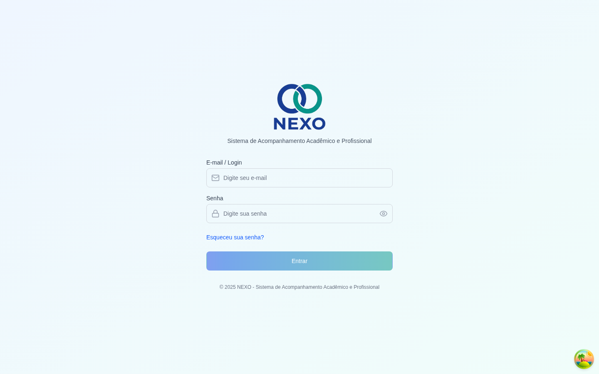
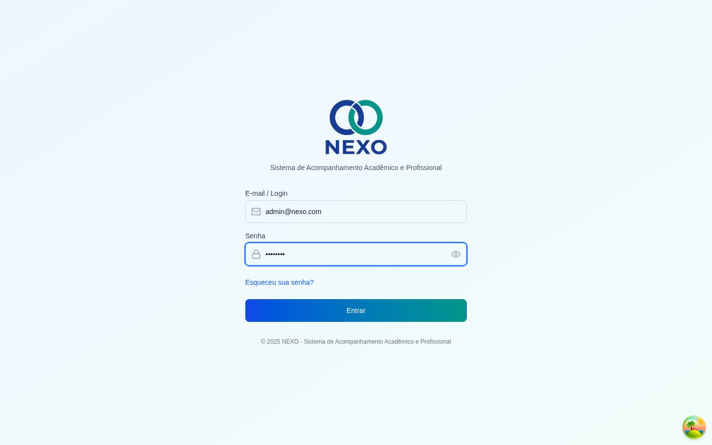
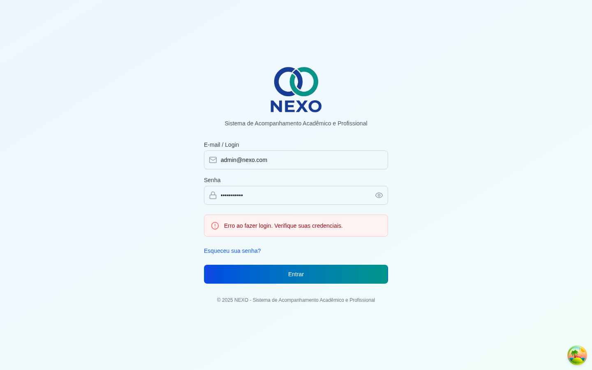
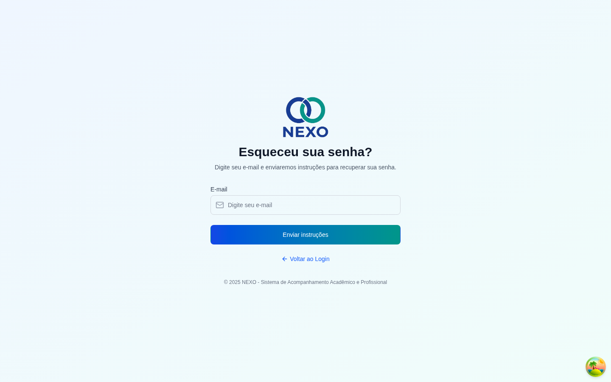
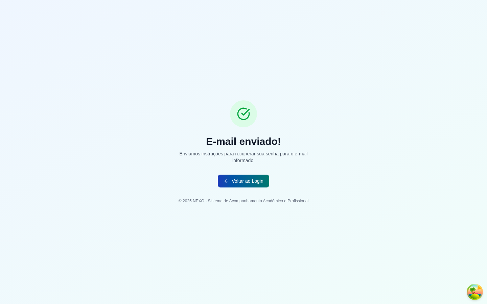
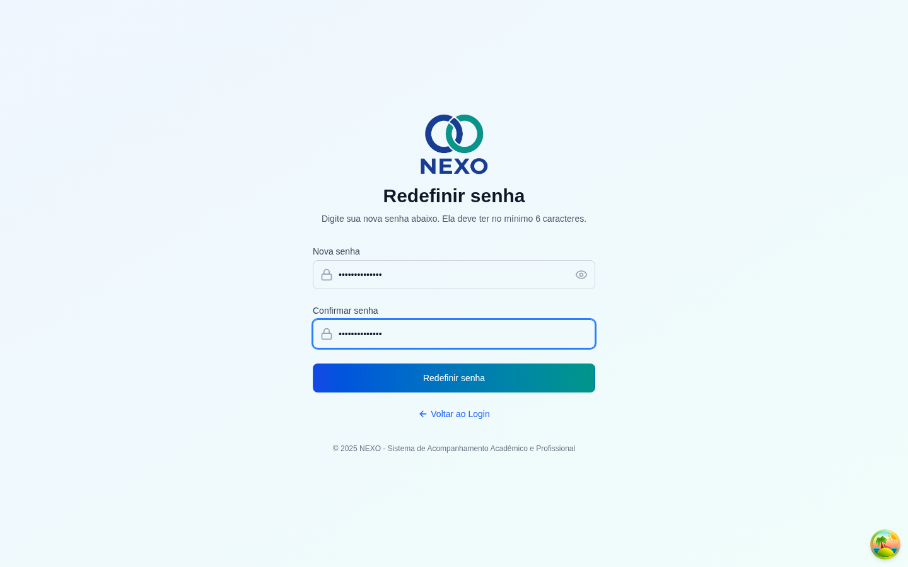

Acesso ao sistema
Esta seção mostra como fazer login no NEXO e o que fazer quando você esquecer sua senha.
1. Fazer login
Disponível para todos os perfis com cadastro ativo de funcionário.
-
Abrir a tela de login
Acesse o endereço do NEXO no navegador. Você será levado à tela de login automaticamente caso não esteja autenticado.

Tela de login inicial. -
Informar e-mail e senha
Preencha seu e-mail corporativo e sua senha. Use o ícone do olho à direita do campo senha para mostrar ou ocultar o que está sendo digitado.

Formulário preenchido, pronto para enviar. -
Clicar em "Entrar"
Em caso de sucesso, você é redirecionado para o Dashboard. Em caso de erro, uma mensagem em vermelho aparecerá logo acima dos campos.

Quando o e-mail ou a senha estão incorretos.
Após várias tentativas falhas, peça ao Administrador para verificar o cadastro do seu usuário em Funcionários.
2. Esqueci minha senha
Disponível para todos os perfis. É necessário ter acesso ao e-mail cadastrado.
-
Clicar em "Esqueceu sua senha?"
O link fica logo abaixo do botão "Entrar" na tela de login.

Tela de solicitação de redefinição de senha. -
Informar o e-mail cadastrado
Digite o mesmo e-mail que você usa para entrar no sistema e clique em Enviar instruções.

Confirmação de envio do e-mail. -
Abrir o e-mail e clicar no link
Procure o e-mail enviado pelo NEXO (verifique também a caixa de spam). Clique no link de redefinição — ele é válido por tempo limitado.
-
Definir a nova senha
Digite a nova senha (mínimo de 6 caracteres) e repita no segundo campo. Clique em Redefinir Senha.

Defina e confirme a nova senha. -
Voltar para o login
Em caso de sucesso, o sistema mostra uma confirmação verde ("Senha redefinida com sucesso!") e disponibiliza o botão Voltar ao Login. Use sua nova senha para entrar.
Se o link de redefinição expirou ou foi usado, basta repetir o processo a partir da tela "Esqueceu sua senha?".